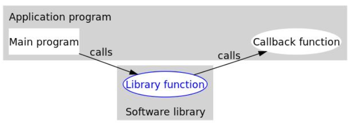
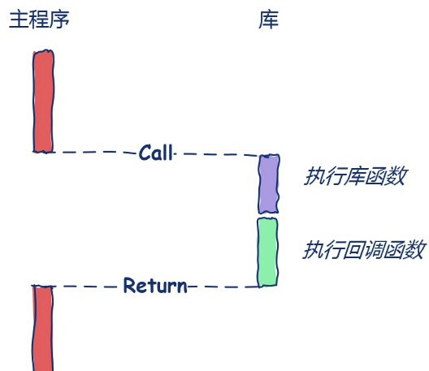
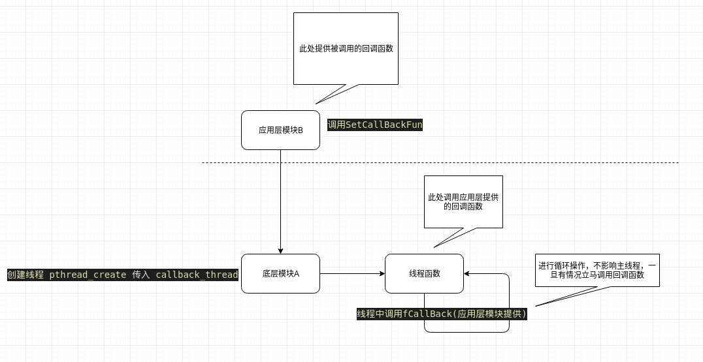
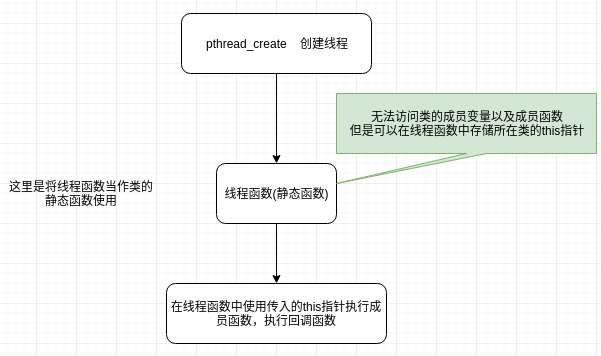

函数指针
在介绍回调函数之前，首先介绍一下函数指针,顾名思义指向函数的指针
返回类型 (*函数名) (参数表) //其实声明函数指针就是声明一个指针变量
#include <iostream>
using namespace std;
//定义一个函数指针pFUN，函数的返回类型为char,参数为整形的函数
char (*pFun) (int);
//从指针层面上理解该函数，即函数的函数名实际上是一个指针，该指针指向函数在内存中的首地址
char glFun(int a)
{
cout << a;
return 'a';
}
int main()
{
pFun = glFun; //将函数glFun的地址赋值给变量pFun
char a = (*pFun)(2); // *pFun 显然是取pFun所指向地址的内容，当然也就是取出了函数glFun()的内容，然后给定参数为2。
return 0;
}
通过上面的一个小例子，我们知道了函数指针的用法，而typedef可以让函数指针更直观方便。
函数指针搭配typedef
typedef 返回类型 (*新类型) (参数表)
//将参数为int类型返回值是char类型的 函数指针 定义为一个新类型 PTRFUN
typedef char (*PTRFUN)(int);
//使用typedef 可以方便的声明函数指针变量
PTRFUN pFun,pFun2;
char glFun(int a){ return;}
char glFun2(int a){ return;}
void main()
{
pFun = glFun;
pFun2 = glFun2;
(*pFun)(2);
}
通过函数指针的两种定义形式，可以看出使用typedef的优势。typedef的功能是定义新的类型。第一句就是定义了一种PTRFUN类型的函数指针，这种函数指针指向一个int为参数并返回char的函数。在后面的程序就可以使用PTRFUN类型去定义变量。
回调函数
【网络链接】回调函数
回调函数定义
在计算机科学中，回调函数是指一段以参数的形式传递给其它代码的可执行代码。
个人理解:也就是将一段代码A 当做参数传递给FunB，由FunB执行代码A，目前传递代码A的形式一般是使用函数名C(函数指针)实现。而这个C指向的函数叫做回调函数。
回调函数的作用
回调函数适合使用在两个部分之间调用函数的情况，通过使用回调函数可以解耦两个部分，使得功能的实现更灵活。
个人理解:目前我理解的两个部分就是模块之间，至于线程之间，进程之间的先不考虑，不过我目前也就用到同线程模块之间这个级别。

在上图中，主程序把回调函数像参数一样传入库函数(注意，回调函数是被调用者编写的，而真正调用回调函数的是第三方库函数，所以回调函数和主函数是在一起的)。这样一来，只要我们改变传进库函数的回调函数，就可以实现不同的功能，这样有没有觉得很灵活？
如果十个人调用一个库函数，但是每个人都要在库函数功能的基础上增加新的功能，那么他们只需要编写适合自己的回调函数并传递给库函数即可。丝毫不需要修改库函数的实现，这样就实现了解耦。
如果库函数源码对我们不可见，我们修改不了库函数的实现，也就是说不能通过修改库函数让库函数调用普通函数那样实现，那我们就只能通过传入不同的回调函数了，这也就是在日常工作中常见的情况。
回调函数实例
实例1 有参回调 无参回调
// Callback_1() 和 Callback_2 都是回调函数
int Callback_1() {
printf("Hello, this is Callback_1 \n");
return 0;
}
int Callback_2(int a, char b){
cout << "int a = " << a << endl;
cout << "char b = " << b << endl;
return 0;
}
//你可以理解FunPrint，这就是第三方库中的函数，他的入参就是回调函数指针
void FunPrint(int(*FUNCALL)()){
}
void FunPrint(int a, char b, int(*FUNCALL)(int,char)){
cout << "你传入的函数的参数是 int = " << a << " char = " << b << endl;
cout << "回调函数被调用并返回 = "<< FUNCALL(a,b) << endl;
}
int main()
{
int a = 10;
char b = 'A';
FunPrint(a,b,Callback_2);
return 0;
}
实例2 使用typedef定义回调函数的类型
#include<stdio.h>
#include <iostream>
using namespace std;
//这样就定义了一个回调参数的类型
typedef int(*FUN_CALL)(int a, char c);
int Callback_2(int a, char b)
{
cout << "int a = " << a << endl;
cout << "char b = " << b << endl;
return 0;
}
//在使用的时候就可以直接调用，而且不需要在形参中写参数，可以在函数中对回调函数赋值
void FunPrint(FUN_CALL fun , int a , char b)
{
fun(a, b);
}
int main()
{
FunPrint(Callback_2, 10, 'A');
return 0;
}
回调函数的分类
同步回调
同步回调，就是调用过程中会产生阻塞，如下图所示，即使回调函数在库中被调用还是要堵塞。

异步回调
在同步回调中，可以看到上层函数在需要的时候会主动传递回调函数调用底层函数，这样的做法其实只达到了一个解偶的作用，但还是效率低，主线程需要等待底层执行回调函数。
而且很多时候，主线程不知道应该什么时候来调用底层函数，比如键盘按键事件，这时候主线程其实是被动接收消息的。此时我们希望底层函数可以自己等待一个时机去调用回调函数并且将需要的信息返回给主线程,此时异步回调可以帮我们实现这样的需求。异步回调的实现依赖于多线程或者多进程，在这里先介绍一下使用多线程实现异步回调的方法。
【网络链接】C语言 异步回调
【网络链接】C++ 异步回调

#include <pthread.h>
#include <stdio.h>
#include <stdlib.h>
#include <unistd.h>
//-----------------------------模拟底层实现A---------------------------------
//函数指针定义，后面可以直接使用pcb，方便
typedef void (*pcb)(int a);
//自定义数据结构
typedef struct parameter{
int a ;
pcb callback;
}parameter;
//此函数在子线程中使用 p1是自定义数据结构指针
void* callback_thread(void *p1) {
parameter* p = (parameter*)p1 ;
while(1){
printf("GetCallBack print! \n");
sleep(3); //延时3秒执行callback函数
p->callback(p->a); //函数指针执行函数，这个函数来自于应用层B
printf("====================\n");
}
}
//A留给应用层B的接口函数
void SetCallBackFun(int a, pcb callback){
printf("SetCallBackFun print! \n");
parameter *p = (parameter *)malloc(sizeof(parameter)) ;
p->a = a;
p->callback = callback;
//创建线程
pthread_t thing1;
pthread_create(&thing1,NULL,callback_thread,(void *) p);
pthread_join(thing1,NULL);
}
//-------------------------------------------------------------------------
//-----------------------模拟应用层B----------------------------------------
// 应用者增加的函数，此函数会在A中被执行 此函数称为回调函数
void fCallBack(int a) {
//do something
printf("a = %d\n",a);
printf("fCallBack print! \n");
}
int main(void){
SetCallBackFun(4,&fCallBack);
return 0;
}
//-------------------------------------------------------------------------

C语言中都是在文件中定义函数就行了，所以调用起来会显得简洁。
C++中增加了类的概念，所以一般开发时会为了封装性而使用类成员函数，但是由于class中的this指针问题会导致像回调函数、线程函数若是变成类的成员函数则在被当作参数被传递时报错
所以采用了线程函数作为底层类的静态函数，底层类成员变量中存储应用类指针，线程函数中传入底层类指针，线程函数中调用底层类成员函数，调用回调函数。
#include <pthread.h>
#include <stdio.h>
#include <stdlib.h>
#include <unistd.h>
#include <iostream>
class ApplicFun; //类的前置声明
class UnderFun;
//根据线程参数自定义结构 ，因为线程函数是静态函数不能访问成员函数或变量，所以需要自定义数据结构存储数据
struct ThreadParam{
UnderFun * pthis;
int a ;
};
//定义了应用层的成员函数的函数指针
typedef void (ApplicFun::*Cbfun)(int);
//==========================底层类============================
class UnderFun{
public:
UnderFun(){}
//静态函数 子线程函数
static void * funCallbackThread(void* p);
//线程中调用的函数 , 此函数调用应用程序中的回调函数
void ThreadFunc(int a){
printf("exec ThreadFunc \n");
while(1){
sleep(1);
(m_pInstance->*m_pCbfun)(a); //调用回调函数
}
}
//底层留给应用层的调用接口
void SetCallBack(ApplicFun *pInstance,Cbfun pFun,int a ){
ThreadParam* p = new ThreadParam;
p->pthis = this;
p->a = a;
m_pInstance = pInstance; //存储应用类指针
m_pCbfun = pFun; //存储回调函数
pthread_t thing1;
pthread_create(&thing1,NULL,funCallbackThread,(void *)p);
pthread_join(thing1,NULL);
}
private:
Cbfun m_pCbfun;
ApplicFun * m_pInstance;
};
//线程函数
void * UnderFun::funCallbackThread(void * _p)
{
printf("exec funCallbackThread\n");
ThreadParam * p = (ThreadParam *)_p;
if(p != NULL)
{
p->pthis->ThreadFunc(p->a); //调用底层类的成员函数
}
return NULL;
}
//=======================应用层类=========================
class ApplicFun
{
public:
ApplicFun(){}
void fCallBack(int p)
{
printf("应用层的回调函数执行 p = %d\n",p);
}
};
int main(void )
{
//类中定义线程，并实现回调
UnderFun myunder;
ApplicFun myApp;
int p = 45;
myunder.SetCallBack(&myApp,&ApplicFun::fCallBack,p);
getchar();
return 0;
}